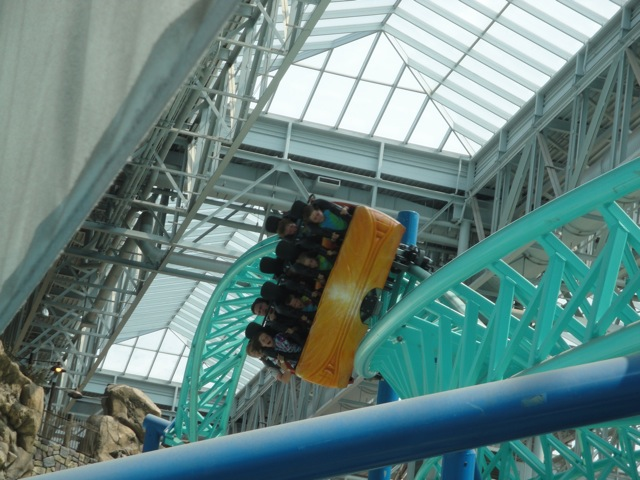
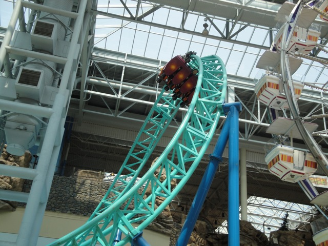
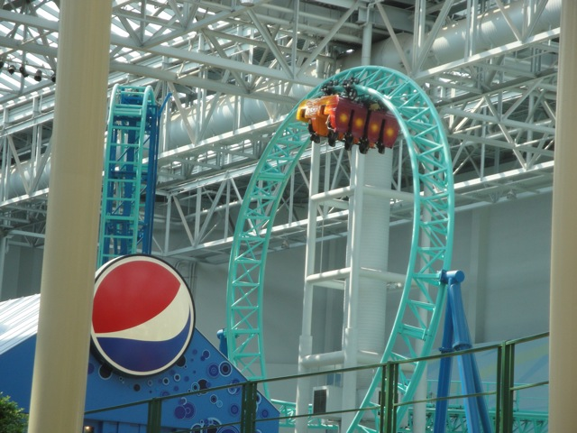
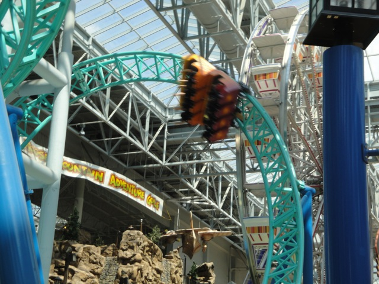
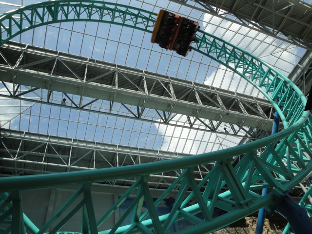

| |
Spongebob Squarepants Rock Bottom Plunge Review

For today's review, we are heading to Nickelodeon Universe to review Spongebob. This is the parks Euro Fighter, and it's really fun. And of course, it's pretty amazing that they put the ride in a freaking mall. Anyways, you get in the cars, pull down the OTSRs and you're off!!! You roll around a turn and head straight for the vertical lift. For anyone who's never done a vertical lift before, it's pretty intimidating to just stare at. But before you know it, the lift begins to move and you begin to climb. As you're climbing, all you're able to see is the sky and the roof of the mall. So that's pretty cool (Dude, I really want to ride this on a rainy day so I can see the rain actually land on the rain of the roof in front of your face). Anyways, you reach the top of the lifthill and suddenly slow down. Yep. It's got the Goliath effect. Oh well. No big deal. But right as you're getting a good view of the mall, you are yanked down in a beyond 90 degree drop. This provides you with some pretty good ejector airtime and instantly plants a smile on your face. After that awesome drop, you soar up into a vertical loop. And yeah, that's really fun and plants one nice smile on your face. Up next, a cutback. But first, there's this itty bitty tiny little bump in your way. But as you go over it, HOLY CRAP!!!!!!! This little sucker provides you with some ejector air, and it is STRONG!!!!!! In fact, I think this may be the smallest ejector air on any coaster anywhere. Anyways, we then head into the cutback, which is also an awesome element. While you don't really get any laterals, you still get a lot of fun, and actually a little bit of hangtime. So yeah. Another really fun element on Spongebob. You then head straight into the Zero G Roll. Now trust me when I say this. This is no ordinary Zero G Roll. You actually start off getting some good laterals. You just slide to the left of your seat, and before you know it, you're upsidedown. And unlike on most rides where you're just upsidedown for a split second and mostly just notice the Positive Gs, here, you're upsidedown for what feels like 5 whole seconds, leaving you with some seriously wicked hang time. You then slide back to the center of your seat, only to slide back to your left as you head through a sharp left turn into the midcourse brakes. Yeah. That first half kicked some serious ass!!! I can't wait to see what they did to the 2nd half. Well unfortunetly, the second half is mostly just the ride winding down. Anyways, you twist down another drop that provides you with some good speed before heading through a nice turnaround that provides you with some decent laterals. And to finish it all off, yet another fake helix of death. This one is kind of dissapointing as you start off with some nice speed, but as you helix upwards, you lose a lot of that speed before heading into the final brake run. But still. This ride kicks major ass and is a fantastic coaster for Nickelodeon Universe. Totally recommend it if you're ever at the Mall of America (Now if only I could convince the stupid Ventura Mall to build their own Euro Fighter).
8/10
Location: Nickelodeon Universe
Opened: 2008
Built by: Gerstlauer
Last Ridden: August 5, 2010
Spongebob Squarepants Rock Bottom Plunge Photos










|